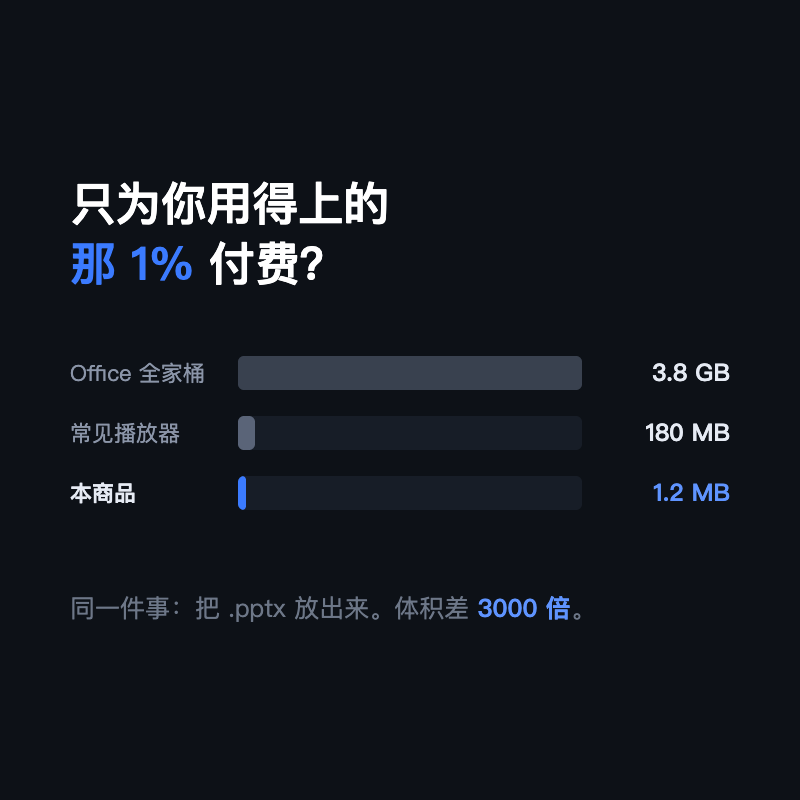
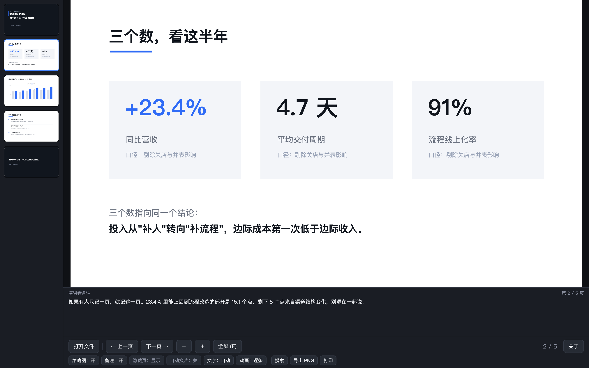
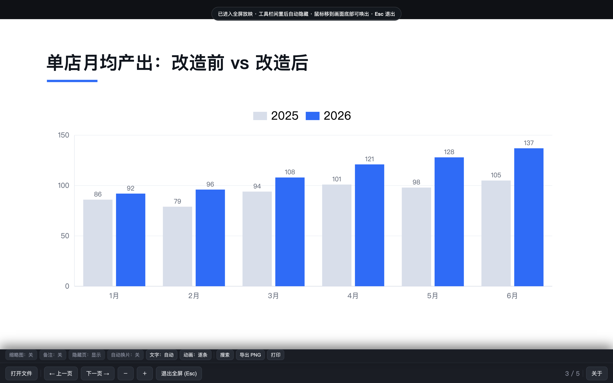
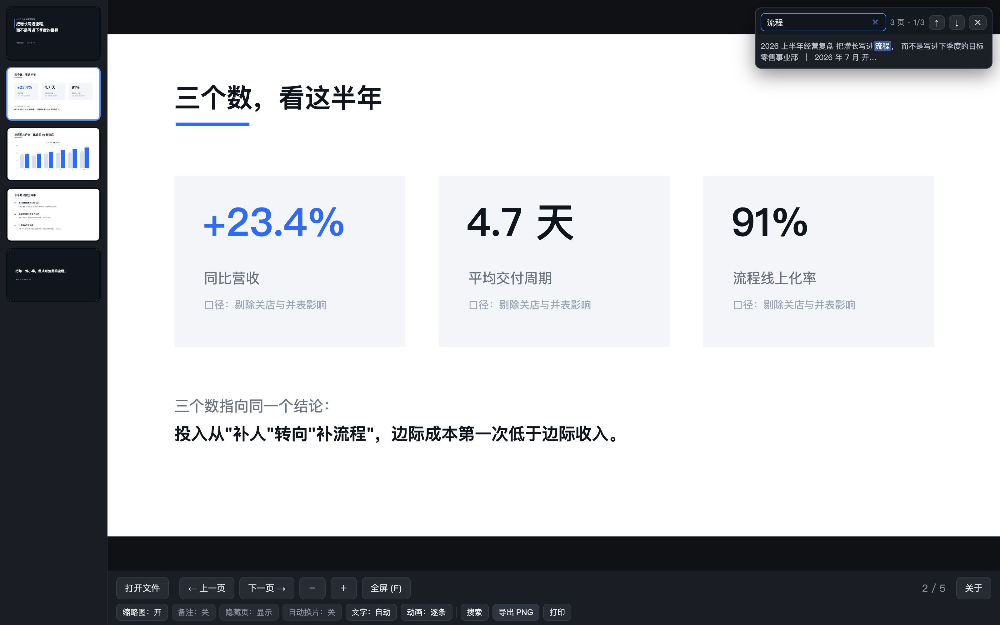

一台不装 Office 的电脑，也能把 .pptx 放好。它不是"精简版 Office"，是只读器：解码 pptx、把画面画出来、把它放好。所以只有 1.2 MB。
硬盘 256G 的笔记本，装完 Office 就没了六分之一。而它被用到的功能，往往只有"放出来看"。
绝大多数人打开 PPT 的那一刻，只是要看。



动画给两种语义：逐条（按 PPT 原样一条条点出来，用于演讲）和整页（一次显示完，用于阅读）。内嵌音视频能读到你设好的循环和音量。

| 系统 | Windows 10 / 11（64 位） |
|---|---|
| 依赖 | 系统自带 WebView2（Win10 1803 以后基本预装，缺了会弹窗引导下载） |
| 磁盘 | 约 10 MB |
| 不支持 | macOS、Linux、手机、WPS 私有格式 |
具体发货方式以实际店铺页面为准。